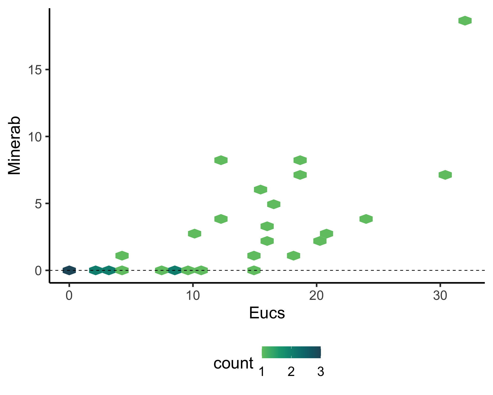
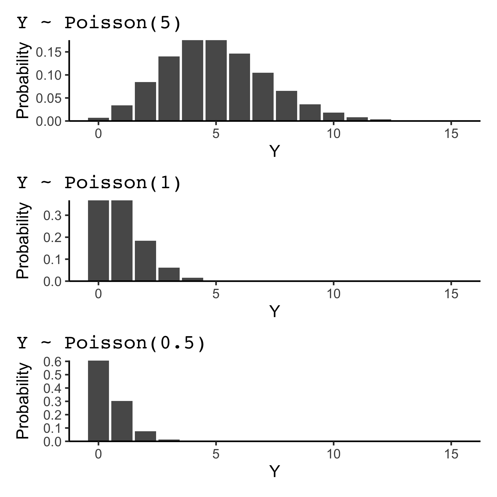
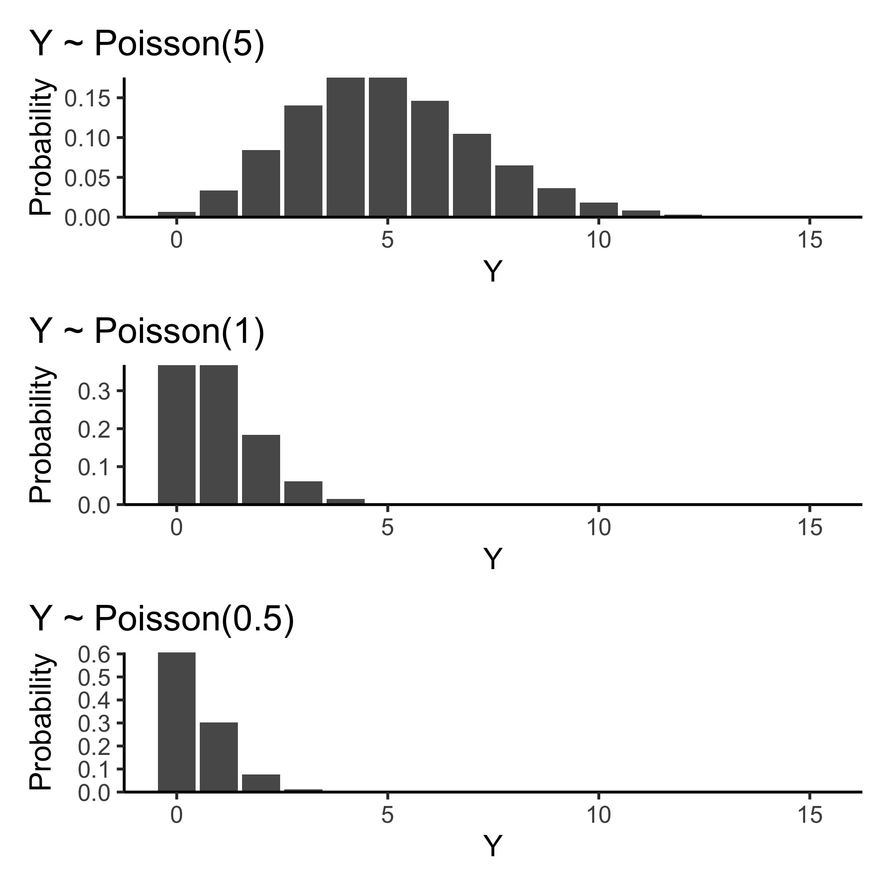
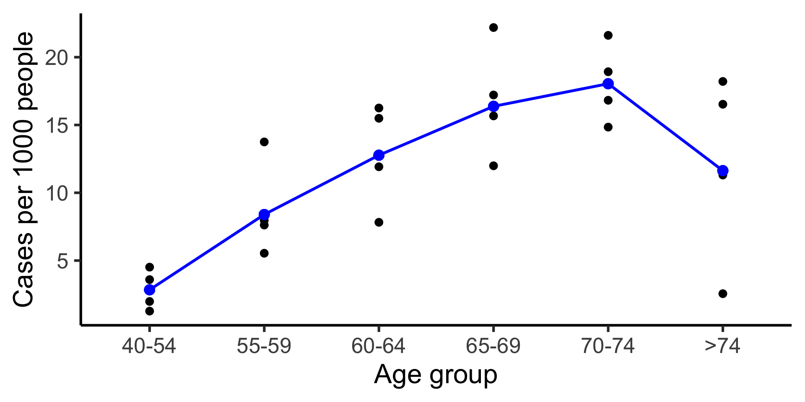
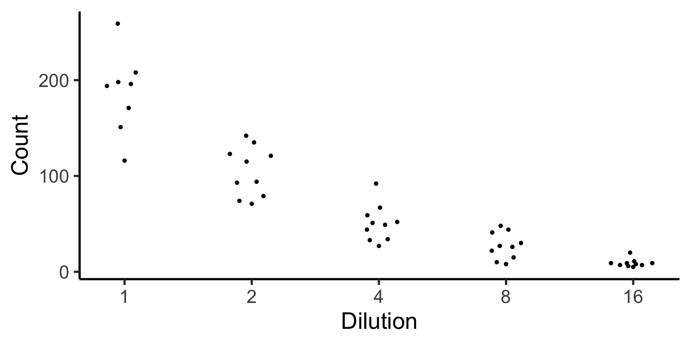
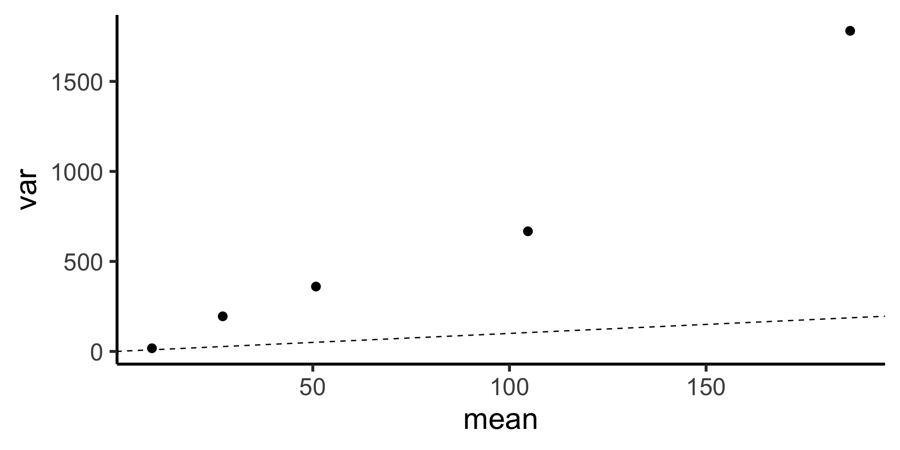

Code

ANU BDSI
workshop Generalised Linear Models
Biological Data Science Institute
27th September 2024
Eucs = number of eucalypt trees, andMinerab = abundance of noisy miners.
If Y \sim \text{Poisson}(\lambda), then P(Y = y) = \frac{e^{-\lambda} \lambda^y}{y!} for y = 0, 1, 2, \ldots and \lambda > 0.
The mean and variance of Y are both \lambda.
The Poisson distribution is often used to model (unrestricted) count data.
\log_e(\mu_i) = \beta_0 + \beta_1x_{i1} + \beta_1x_{i2} + \ldots + \beta_kx_{ik}.


base +
geom_smooth(method = "glm", se = FALSE, linewidth = 2,
method.args = list(family = poisson(link = "log"))) +
geom_point(aes(y = .fitted), color = "red", size = 5,
data = broom::augment(fit_glm,
type.predict = "response",
newdata = tibble(Eucs = seq(0, 30, by = 10)))) +
guides(fill = "none") +
labs(title = "glm(Minerab ~ Eucs, \n family = poisson(link = 'log'))") | Income | Attitude | Total | |
|---|---|---|---|
| For | Against | ||
| High | 263 | 151 | 414 |
| Low | 258 | 222 | 480 |
| Total | 521 | 373 | 894 |
H_0: p_{ij} = p_{i\cdot}p_{\cdot j}
Observed:
Expected:
fit_main:| Income | Attitude | Total | |
|---|---|---|---|
| For | Against | ||
| High | 263 | 151 | 414 |
| Low | 258 | 222 | 480 |
| Total | 521 | 373 | 894 |
data(danishlc, package = "GLMsData")
danishlc |>
mutate(Age = fct_reorder(Age, parse_number(as.character(Age)), min)) |>
ggplot(aes(Age, Cases/Pop * 1000, color = City)) +
geom_point(size = 3) +
geom_line(aes(group = City), linewidth = 1.2) +
geom_text(aes(label = City),
hjust = 0, nudge_x = 0.1,
data = ~filter(., Age == ">74"), size = 9) +
guides(color = "none") +
labs(y = "Cases per 1000 people", x = "Age group") +
scale_x_discrete(expand = expansion(mult = c(0.1, 0.3)))\log\left(\frac{\mu_i}{\texttt{Pop}_i}\right) = \beta_0 + \beta_{1\texttt{Age}_i} + \beta_{2\texttt{City}_i} + \beta_{3\texttt{AgeCity}_i}
\log(\mu_i) = \log(\texttt{Pop}_i) + \beta_0 + \beta_{1\texttt{Age}_i} + \beta_{2\texttt{City}_i} + \beta_{3\texttt{AgeCity}_i}
Age in the model.broom::augment(fit_glm3, type.predict = "response") |>
mutate(Pop = exp(`offset(log(Pop))`)) |>
mutate(Age = fct_reorder(Age, parse_number(as.character(Age)), min)) |>
ggplot(aes(Age, Cases/Pop * 1000)) +
geom_point(size = 3) +
geom_point(aes(y = .fitted/Pop * 1000), color = "blue", size = 4) +
geom_line(aes(y = .fitted/Pop * 1000), color = "blue", group = 1, linewidth = 1.2) +
labs(y = "Cases per 1000 people", x = "Age group") 

Suppose Y \sim \text{Gamma}(k, \theta)
f(y) = \frac{1}{\Gamma(k)\theta^k}y^{k-1}e^{-y/\theta}
E(Y) = k\theta and var(Y) = k\theta^2

Y \sim \text{Negative Binomial}(m, k)
P(Y = y) = \frac{\Gamma(y + k)}{\Gamma(y + 1) \Gamma(k)} \left(\frac{m}{m + k}\right)^{y} \left(\frac{k}{m + k}\right)^{k}
where m is the mean and k is the inverse of the dispersion parameter.
E(Y) = m and \text{Var}(Y) = m + \frac{1}{r}m^2
MASS::glm.nb() function:theta in the model object:glm(y ~ x, family = poisson())glm(y ~ offset(log(size)) + x, family = poisson())MASS::glm.nb(y ~ x).
anu-bdsi.github.io/workshop-GLM/